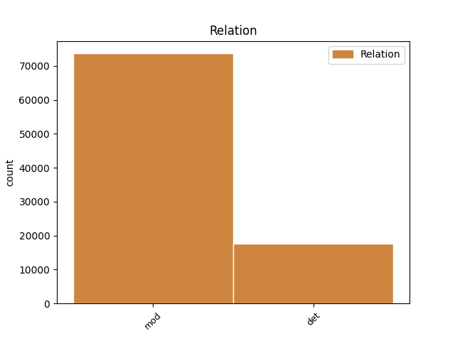
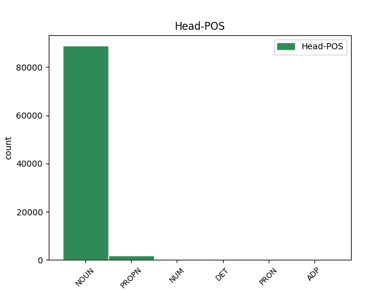
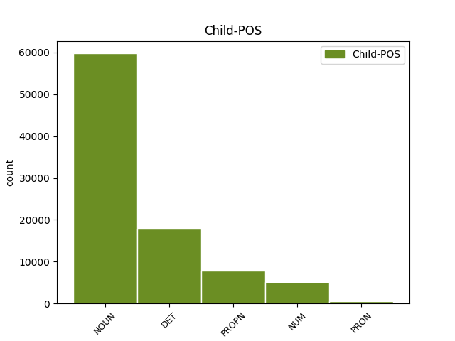

Distribution of features within this leaf



Agreement Rules sorted by frequency.
- When the dependent token is the determiner(det) of the head token, and the head token is NOUN and the dependent token is DET.
1 Proto _ _ _ _ 0 _ _ _
2 je _ _ _ _ 0 _ _ _
3 třeba _ _ _ _ 0 _ _ _
4 připomenout _ _ _ _ 0 _ _ _
5 , _ _ _ _ 0 _ _ _
6 že _ _ _ _ 0 _ _ _
7 riziko _ _ _ _ 0 _ _ _
8 takové takový DET PDFS2---------- Case=Gen|Gender=Fem|Number=Sing|PronType=Dem 11 det _ _
9 globálně _ _ _ _ 0 _ _ _
10 ničivé _ _ _ _ 0 _ _ _
11 srážky srážka NOUN NNFS2-----A---- Case=Gen|Gender=Fem|Number=Sing|Polarity=Pos 0 _ _ _
12 v _ _ _ _ 0 _ _ _
13 nejbližším _ _ _ _ 0 _ _ _
14 století _ _ _ _ 0 _ _ _
15 je _ _ _ _ 0 _ _ _
16 opravdu _ _ _ _ 0 _ _ _
17 minimální _ _ _ _ 0 _ _ _
18 ; _ _ _ _ 0 _ _ _
1 Ze _ _ _ _ 0 _ _ _
2 zcela _ _ _ _ 0 _ _ _
3 nenápadné _ _ _ _ 0 _ _ _
4 astronomicky _ _ _ _ 0 _ _ _
5 poklidné _ _ _ _ 0 _ _ _
6 disciplíny _ _ _ _ 0 _ _ _
7 se _ _ _ _ 0 _ _ _
8 tak _ _ _ _ 0 _ _ _
9 rázem _ _ _ _ 0 _ _ _
10 stalo _ _ _ _ 0 _ _ _
11 politikum _ _ _ _ 0 _ _ _
12 prvého _ _ _ _ 0 _ _ _
13 řádu _ _ _ _ 0 _ _ _
14 , _ _ _ _ 0 _ _ _
15 kdy _ _ _ _ 0 _ _ _
16 se _ _ _ _ 0 _ _ _
17 v _ _ _ _ 0 _ _ _
18 astronomech _ _ _ _ 0 _ _ _
19 probouzí _ _ _ _ 0 _ _ _
20 " _ _ _ _ 0 _ _ _
21 planetární _ _ _ _ 0 _ _ _
22 ekologický _ _ _ _ 0 _ _ _
23 instinkt _ _ _ _ 0 _ _ _
24 " _ _ _ _ 0 _ _ _
25 ( _ _ _ _ 0 _ _ _
26 nesahejte _ _ _ _ 0 _ _ _
27 nám _ _ _ _ 0 _ _ _
28 na _ _ _ _ 0 _ _ _
29 planetky _ _ _ _ 0 _ _ _
30 : _ _ _ _ 0 _ _ _
31 je _ _ _ _ 0 _ _ _
32 to _ _ _ _ 0 _ _ _
33 neobnovitelné _ _ _ _ 0 _ _ _
34 přírodní _ _ _ _ 0 _ _ _
35 bohatství _ _ _ _ 0 _ _ _
36 ) _ _ _ _ 0 _ _ _
37 , _ _ _ _ 0 _ _ _
38 zatímco _ _ _ _ 0 _ _ _
39 vojenští _ _ _ _ 0 _ _ _
40 experti _ _ _ _ 0 _ _ _
41 cítí _ _ _ _ 0 _ _ _
42 jedinečnou _ _ _ _ 0 _ _ _
43 příležitost _ _ _ _ 0 _ _ _
44 , _ _ _ _ 0 _ _ _
45 jak _ _ _ _ 0 _ _ _
46 protáhnout _ _ _ _ 0 _ _ _
47 strategickou _ _ _ _ 0 _ _ _
48 obrannou _ _ _ _ 0 _ _ _
49 iniciativu _ _ _ _ 0 _ _ _
50 do _ _ _ _ 0 _ _ _
51 21 _ _ _ _ 0 _ _ _
52 . _ _ _ _ 0 _ _ _
53 století _ _ _ _ 0 _ _ _
54 , _ _ _ _ 0 _ _ _
55 a _ _ _ _ 0 _ _ _
56 dokonce _ _ _ _ 0 _ _ _
57 v _ _ _ _ 0 _ _ _
58 ušlechtilém _ _ _ _ 0 _ _ _
59 zájmu _ _ _ _ 0 _ _ _
60 obrany obrana NOUN NNFS2-----A---- Case=Gen|Gender=Fem|Number=Sing|Polarity=Pos 0 _ _ _
61 všeho _ _ _ _ 0 _ _ _
62 lidstva lidstvo NOUN NNNS2-----A---- Case=Gen|Gender=Neut|Number=Sing|Polarity=Pos 60 mod _ SpaceAfter=No
63 . _ _ _ _ 0 _ _ _
1 Manévr _ _ _ _ 0 _ _ _
2 zmenšuje _ _ _ _ 0 _ _ _
3 riziko _ _ _ _ 0 _ _ _
4 rozbití _ _ _ _ 0 _ _ _
5 planetky _ _ _ _ 0 _ _ _
6 na _ _ _ _ 0 _ _ _
7 více _ _ _ _ 0 _ _ _
8 kusů _ _ _ _ 0 _ _ _
9 , _ _ _ _ 0 _ _ _
10 ale _ _ _ _ 0 _ _ _
11 současně _ _ _ _ 0 _ _ _
12 zvyšuje _ _ _ _ 0 _ _ _
13 energetickou _ _ _ _ 0 _ _ _
14 náročnost _ _ _ _ 0 _ _ _
15 " _ _ _ _ 0 _ _ _
16 úpravy _ _ _ _ 0 _ _ _
17 " _ _ _ _ 0 _ _ _
18 dráhy _ _ _ _ 0 _ _ _
19 zhruba _ _ _ _ 0 _ _ _
20 o _ _ _ _ 0 _ _ _
21 dva dva NUM ClYP4---------- Case=Acc|Gender=Masc|Number=Plur|NumForm=Word|NumType=Card|NumValue=1,2,3 22 mod _ LNumValue=2
22 řády řád NOUN NNIP4-----A---- Animacy=Inan|Case=Acc|Gender=Masc|Number=Plur|Polarity=Pos 0 _ _ _
23 , _ _ _ _ 0 _ _ _
24 čili _ _ _ _ 0 _ _ _
25 jsme _ _ _ _ 0 _ _ _
26 opět _ _ _ _ 0 _ _ _
27 u _ _ _ _ 0 _ _ _
28 100 _ _ _ _ 0 _ _ _
29 Mt _ _ _ _ 0 _ _ _
30 TNT _ _ _ _ 0 _ _ _
31 ! _ _ _ _ 0 _ _ _
1 Výzkumní _ _ _ _ 0 _ _ _
2 pracovníci _ _ _ _ 0 _ _ _
3 firmy _ _ _ _ 0 _ _ _
4 Merck _ _ _ _ 0 _ _ _
5 , _ _ _ _ 0 _ _ _
6 Sharp _ _ _ _ 0 _ _ _
7 and _ _ _ _ 0 _ _ _
8 Dohme _ _ _ _ 0 _ _ _
9 Research _ _ _ _ 0 _ _ _
10 Laboratories _ _ _ _ 0 _ _ _
11 ( _ _ _ _ 0 _ _ _
12 West West PROPN NNMS1-----A---- Animacy=Anim|Case=Nom|Gender=Masc|NameType=Sur|Number=Sing|Polarity=Pos 13 mod _ LId=West-1
13 Point point NOUN NNIS1-----A---- Animacy=Inan|Case=Nom|Gender=Masc|Number=Sing|Polarity=Pos 0 _ _ _
14 , _ _ _ _ 0 _ _ _
15 Pensylvánie _ _ _ _ 0 _ _ _
16 ) _ _ _ _ 0 _ _ _
17 ve _ _ _ _ 0 _ _ _
18 spolupráci _ _ _ _ 0 _ _ _
19 s _ _ _ _ 0 _ _ _
20 vědci _ _ _ _ 0 _ _ _
21 z _ _ _ _ 0 _ _ _
22 řady _ _ _ _ 0 _ _ _
23 dalších _ _ _ _ 0 _ _ _
24 institucí _ _ _ _ 0 _ _ _
25 vyvinuli _ _ _ _ 0 _ _ _
26 a _ _ _ _ 0 _ _ _
27 v _ _ _ _ 0 _ _ _
28 pokusech _ _ _ _ 0 _ _ _
29 na _ _ _ _ 0 _ _ _
30 zvířatech _ _ _ _ 0 _ _ _
31 vyzkoušeli _ _ _ _ 0 _ _ _
32 monoklonální _ _ _ _ 0 _ _ _
33 protilátku _ _ _ _ 0 _ _ _
34 , _ _ _ _ 0 _ _ _
35 která _ _ _ _ 0 _ _ _
36 je _ _ _ _ 0 _ _ _
37 schopna _ _ _ _ 0 _ _ _
38 chránit _ _ _ _ 0 _ _ _
39 organismus _ _ _ _ 0 _ _ _
40 před _ _ _ _ 0 _ _ _
41 infekcí _ _ _ _ 0 _ _ _
42 virem _ _ _ _ 0 _ _ _
43 HIV _ _ _ _ 0 _ _ _
44 , _ _ _ _ 0 _ _ _
45 původcem _ _ _ _ 0 _ _ _
46 AIDS _ _ _ _ 0 _ _ _
47 ( _ _ _ _ 0 _ _ _
48 Nature _ _ _ _ 0 _ _ _
49 355 _ _ _ _ 0 _ _ _
50 , _ _ _ _ 0 _ _ _
51 728 _ _ _ _ 0 _ _ _
52 , _ _ _ _ 0 _ _ _
53 1992 _ _ _ _ 0 _ _ _
54 ) _ _ _ _ 0 _ _ _
55 . _ _ _ _ 0 _ _ _
1 Dále _ _ _ _ 0 _ _ _
2 pak _ _ _ _ 0 _ _ _
3 na _ _ _ _ 0 _ _ _
4 místě _ _ _ _ 0 _ _ _
5 jména _ _ _ _ 0 _ _ _
6 Johánka _ _ _ _ 0 _ _ _
7 z _ _ _ _ 0 _ _ _
8 Dubé _ _ _ _ 0 _ _ _
9 vzniká _ _ _ _ 0 _ _ _
10 vymazáním _ _ _ _ 0 _ _ _
11 příjmení _ _ _ _ 0 _ _ _
12 " _ _ _ _ 0 _ _ _
13 Dubé _ _ _ _ 0 _ _ _
14 " _ _ _ _ 0 _ _ _
15 a _ _ _ _ 0 _ _ _
16 přepsáním _ _ _ _ 0 _ _ _
17 příjmení _ _ _ _ 0 _ _ _
18 " _ _ _ _ 0 _ _ _
19 Pomuk _ _ _ _ 0 _ _ _
20 " _ _ _ _ 0 _ _ _
21 nové _ _ _ _ 0 _ _ _
22 jméno _ _ _ _ 0 _ _ _
23 " _ _ _ _ 0 _ _ _
24 Johannes Johannes PROPN NNMS1-----A---- Animacy=Anim|Case=Nom|Gender=Masc|NameType=Giv|Number=Sing|Polarity=Pos 0 _ _ _
25 d _ _ _ _ 0 _ _ _
26 ' _ _ _ _ 0 _ _ _
27 Pomuk Pomuk PROPN NNIS1-----A---- Animacy=Inan|Case=Nom|Gender=Masc|NameType=Geo|Number=Sing|Polarity=Pos 24 mod _ SpaceAfter=No
28 " _ _ _ _ 0 _ _ _
29 . _ _ _ _ 0 _ _ _
1 Při _ _ _ _ 0 _ _ _
2 nácviku _ _ _ _ 0 _ _ _
3 boje _ _ _ _ 0 _ _ _
4 se _ _ _ _ 0 _ _ _
5 sekerou _ _ _ _ 0 _ _ _
6 nám _ _ _ _ 0 _ _ _
7 velmi _ _ _ _ 0 _ _ _
8 pomohli _ _ _ _ 0 _ _ _
9 členové člen NOUN NNMP1-----A---- Animacy=Anim|Case=Nom|Gender=Masc|Number=Plur|Polarity=Pos 18 mod _ _
10 skupiny _ _ _ _ 0 _ _ _
11 historického _ _ _ _ 0 _ _ _
12 šermu _ _ _ _ 0 _ _ _
13 " _ _ _ _ 0 _ _ _
14 Tulichy _ _ _ _ 0 _ _ _
15 vulgo _ _ _ _ 0 _ _ _
16 zrazichy _ _ _ _ 0 _ _ _
17 " _ _ _ _ 0 _ _ _
18 Štylfríd Štylfríd PROPN NNMS1-----A---- Animacy=Anim|Case=Nom|Gender=Masc|NameType=Giv|Number=Sing|Polarity=Pos 0 _ _ _
19 a _ _ _ _ 0 _ _ _
20 Mojslav _ _ _ _ 0 _ _ _
21 , _ _ _ _ 0 _ _ _
22 kteří _ _ _ _ 0 _ _ _
23 si _ _ _ _ 0 _ _ _
24 přejí _ _ _ _ 0 _ _ _
25 být _ _ _ _ 0 _ _ _
26 uvedeni _ _ _ _ 0 _ _ _
27 pouze _ _ _ _ 0 _ _ _
28 křestními _ _ _ _ 0 _ _ _
29 jmény _ _ _ _ 0 _ _ _
30 . _ _ _ _ 0 _ _ _
1 Právě _ _ _ _ 0 _ _ _
2 ono on PRON PPNS1--3------- Case=Nom|Gender=Neut|Number=Sing|Person=3|PronType=Prs 4 mod _ LId=on-1
3 nedávné _ _ _ _ 0 _ _ _
4 přiblížení přiblížení NOUN NNNS1-----A---- Case=Nom|Gender=Neut|Number=Sing|Polarity=Pos 0 _ _ _
5 k _ _ _ _ 0 _ _ _
6 Zemi _ _ _ _ 0 _ _ _
7 pozměnilo _ _ _ _ 0 _ _ _
8 její _ _ _ _ 0 _ _ _
9 dráhu _ _ _ _ 0 _ _ _
10 tak _ _ _ _ 0 _ _ _
11 , _ _ _ _ 0 _ _ _
12 že _ _ _ _ 0 _ _ _
13 při _ _ _ _ 0 _ _ _
14 příštích _ _ _ _ 0 _ _ _
15 setkáních _ _ _ _ 0 _ _ _
16 bude _ _ _ _ 0 _ _ _
17 od _ _ _ _ 0 _ _ _
18 Země _ _ _ _ 0 _ _ _
19 podstatně _ _ _ _ 0 _ _ _
20 dále _ _ _ _ 0 _ _ _
21 než _ _ _ _ 0 _ _ _
22 r _ _ _ _ 0 _ _ _
23 . _ _ _ _ 0 _ _ _
24 1992 _ _ _ _ 0 _ _ _
25 . _ _ _ _ 0 _ _ _
1 To ten DET PDNS1---------- Case=Nom|Gender=Neut|Number=Sing|PronType=Dem 0 _ _ _
2 vše všechen DET PLNS1---------1 Case=Nom|Gender=Neut|Number=Sing|PronType=Tot 1 det _ _
3 jsou _ _ _ _ 0 _ _ _
4 tvrzení _ _ _ _ 0 _ _ _
5 metafyzická _ _ _ _ 0 _ _ _
6 , _ _ _ _ 0 _ _ _
7 netestovatelná _ _ _ _ 0 _ _ _
8 - _ _ _ _ 0 _ _ _
9 stejně _ _ _ _ 0 _ _ _
10 jako _ _ _ _ 0 _ _ _
11 ideologie _ _ _ _ 0 _ _ _
12 - _ _ _ _ 0 _ _ _
13 a _ _ _ _ 0 _ _ _
14 leží _ _ _ _ 0 _ _ _
15 tedy _ _ _ _ 0 _ _ _
16 mimo _ _ _ _ 0 _ _ _
17 oblast _ _ _ _ 0 _ _ _
18 empirických _ _ _ _ 0 _ _ _
19 věd _ _ _ _ 0 _ _ _
20 . _ _ _ _ 0 _ _ _
1 skupiny _ _ _ _ 0 _ _ _
2 onemocnění _ _ _ _ 0 _ _ _
3 dohromady _ _ _ _ 0 _ _ _
4 tvoří _ _ _ _ 0 _ _ _
5 u _ _ _ _ 0 _ _ _
6 obou _ _ _ _ 0 _ _ _
7 pohlaví _ _ _ _ 0 _ _ _
8 přibližně _ _ _ _ 0 _ _ _
9 devět _ _ _ _ 0 _ _ _
10 desetin desetina NUM CyFP2---------- Case=Gen|Gender=Fem|Number=Plur|NumType=Frac 0 _ _ _
11 všech _ _ _ _ 0 _ _ _
12 úmrtí úmrtí NOUN NNNP2-----A---- Case=Gen|Gender=Neut|Number=Plur|Polarity=Pos 10 mod _ _
13 ( _ _ _ _ 0 _ _ _
14 55 _ _ _ _ 0 _ _ _
15 % _ _ _ _ 0 _ _ _
16 nemoci _ _ _ _ 0 _ _ _
17 oběhové _ _ _ _ 0 _ _ _
18 soustavy _ _ _ _ 0 _ _ _
19 , _ _ _ _ 0 _ _ _
20 21 _ _ _ _ 0 _ _ _
21 % _ _ _ _ 0 _ _ _
22 novotvary _ _ _ _ 0 _ _ _
23 , _ _ _ _ 0 _ _ _
24 7 _ _ _ _ 0 _ _ _
25 % _ _ _ _ 0 _ _ _
26 poranění _ _ _ _ 0 _ _ _
27 a _ _ _ _ 0 _ _ _
28 otravy _ _ _ _ 0 _ _ _
29 a _ _ _ _ 0 _ _ _
30 5 _ _ _ _ 0 _ _ _
31 % _ _ _ _ 0 _ _ _
32 nemoci _ _ _ _ 0 _ _ _
33 trávicí _ _ _ _ 0 _ _ _
34 soustavy _ _ _ _ 0 _ _ _
35 ) _ _ _ _ 0 _ _ _
36 . _ _ _ _ 0 _ _ _
1 Václav _ _ _ _ 0 _ _ _
2 Hájek _ _ _ _ 0 _ _ _
3 z _ _ _ _ 0 _ _ _
4 Libočan _ _ _ _ 0 _ _ _
5 , _ _ _ _ 0 _ _ _
6 který _ _ _ _ 0 _ _ _
7 v _ _ _ _ 0 _ _ _
8 té _ _ _ _ 0 _ _ _
9 době _ _ _ _ 0 _ _ _
10 psal _ _ _ _ 0 _ _ _
11 svou _ _ _ _ 0 _ _ _
12 kroniku _ _ _ _ 0 _ _ _
13 českou _ _ _ _ 0 _ _ _
14 , _ _ _ _ 0 _ _ _
15 nedovedl _ _ _ _ 0 _ _ _
16 mylný _ _ _ _ 0 _ _ _
17 letopočet _ _ _ _ 0 _ _ _
18 1383 _ _ _ _ 0 _ _ _
19 uvést _ _ _ _ 0 _ _ _
20 v _ _ _ _ 0 _ _ _
21 soulad _ _ _ _ 0 _ _ _
22 s _ _ _ _ 0 _ _ _
23 letopočtem _ _ _ _ 0 _ _ _
24 smrti _ _ _ _ 0 _ _ _
25 Jana _ _ _ _ 0 _ _ _
26 z _ _ _ _ 0 _ _ _
27 Pomuku _ _ _ _ 0 _ _ _
28 r _ _ _ _ 0 _ _ _
29 . _ _ _ _ 0 _ _ _
30 1393 _ _ _ _ 0 _ _ _
31 jinak _ _ _ _ 0 _ _ _
32 , _ _ _ _ 0 _ _ _
33 než _ _ _ _ 0 _ _ _
34 že _ _ _ _ 0 _ _ _
35 do _ _ _ _ 0 _ _ _
36 svého _ _ _ _ 0 _ _ _
37 díla _ _ _ _ 0 _ _ _
38 uvedl _ _ _ _ 0 _ _ _
39 Jany Jan PROPN NNMP4-----A---- Animacy=Anim|Case=Acc|Gender=Masc|NameType=Giv|Number=Plur|Polarity=Pos 0 _ _ _
40 dva dva NUM ClYP4---------- Case=Acc|Gender=Masc|Number=Plur|NumForm=Word|NumType=Card|NumValue=1,2,3 39 mod _ LNumValue=2|SpaceAfter=No
41 . _ _ _ _ 0 _ _ _
1 V _ _ _ _ 0 _ _ _
2 posledních _ _ _ _ 0 _ _ _
3 letech _ _ _ _ 0 _ _ _
4 na _ _ _ _ 0 _ _ _
5 ně _ _ _ _ 0 _ _ _
6 připadá _ _ _ _ 0 _ _ _
7 v _ _ _ _ 0 _ _ _
8 ČR _ _ _ _ 0 _ _ _
9 téměř _ _ _ _ 0 _ _ _
10 čtvrtina _ _ _ _ 0 _ _ _
11 z _ _ _ _ 0 _ _ _
12 úhrnu _ _ _ _ 0 _ _ _
13 zemřelých _ _ _ _ 0 _ _ _
14 , _ _ _ _ 0 _ _ _
15 kdežto _ _ _ _ 0 _ _ _
16 na _ _ _ _ 0 _ _ _
17 Slovensku _ _ _ _ 0 _ _ _
18 něco _ _ _ _ 0 _ _ _
19 přes _ _ _ _ 0 _ _ _
20 jednu jeden NUM ClFS4---------- Case=Acc|Gender=Fem|Number=Sing|NumForm=Word|NumType=Card|NumValue=1,2,3 21 mod _ LNumValue=1
21 pětinu pětina NUM CyFS4---------- Case=Acc|Gender=Fem|Number=Sing|NumType=Frac 0 _ _ _
22 . _ _ _ _ 0 _ _ _
1 Čím _ _ _ _ 0 _ _ _
2 byl _ _ _ _ 0 _ _ _
3 tento tento DET PDYS1---------- Case=Nom|Gender=Masc|Number=Sing|PronType=Dem 4 det _ _
4 Jan Jan PROPN NNMS1-----A---- Animacy=Anim|Case=Nom|Gender=Masc|NameType=Giv|Number=Sing|Polarity=Pos 0 _ _ _
5 pro _ _ _ _ 0 _ _ _
6 naše _ _ _ _ 0 _ _ _
7 dědy _ _ _ _ 0 _ _ _
8 a _ _ _ _ 0 _ _ _
9 čím _ _ _ _ 0 _ _ _
10 se _ _ _ _ 0 _ _ _
11 může _ _ _ _ 0 _ _ _
12 stát _ _ _ _ 0 _ _ _
13 pro _ _ _ _ 0 _ _ _
14 nás _ _ _ _ 0 _ _ _
15 ? _ _ _ _ 0 _ _ _
1 Pokud _ _ _ _ 0 _ _ _
2 autoři _ _ _ _ 0 _ _ _
3 výchozího _ _ _ _ 0 _ _ _
4 textu _ _ _ _ 0 _ _ _
5 k _ _ _ _ 0 _ _ _
6 něčemu něco PRON PZ--3---------- Case=Dat|PronType=Ind 0 _ _ _
7 takovému takový DET PDZS3---------- Case=Dat|Gender=Masc,Neut|Number=Sing|PronType=Dem 6 det _ _
8 směřují _ _ _ _ 0 _ _ _
9 , _ _ _ _ 0 _ _ _
10 je _ _ _ _ 0 _ _ _
11 jejich _ _ _ _ 0 _ _ _
12 závěr _ _ _ _ 0 _ _ _
13 zpochybněn _ _ _ _ 0 _ _ _
14 překladatelčinou _ _ _ _ 0 _ _ _
15 poznámkou _ _ _ _ 0 _ _ _
16 . _ _ _ _ 0 _ _ _
1 Pro _ _ _ _ 0 _ _ _
2 nás já PRON PP-P4--1------- Case=Acc|Number=Plur|Person=1|PronType=Prs 0 _ _ _
3 badatele badatel NOUN NNMP4-----A---- Animacy=Anim|Case=Acc|Gender=Masc|Number=Plur|Polarity=Pos 2 mod _ _
4 je _ _ _ _ 0 _ _ _
5 důležitá _ _ _ _ 0 _ _ _
6 skutečnost _ _ _ _ 0 _ _ _
7 , _ _ _ _ 0 _ _ _
8 že _ _ _ _ 0 _ _ _
9 každý _ _ _ _ 0 _ _ _
10 zásah _ _ _ _ 0 _ _ _
11 vyžaduje _ _ _ _ 0 _ _ _
12 spoustu _ _ _ _ 0 _ _ _
13 informací _ _ _ _ 0 _ _ _
14 , _ _ _ _ 0 _ _ _
15 které _ _ _ _ 0 _ _ _
16 musíme _ _ _ _ 0 _ _ _
17 znát _ _ _ _ 0 _ _ _
18 předem _ _ _ _ 0 _ _ _
19 . _ _ _ _ 0 _ _ _
1 Lac Lac PROPN NNIS1-----A---- Animacy=Inan|Case=Nom|Gender=Masc|NameType=Geo|Number=Sing|Polarity=Pos 2 mod _ _
2 de de ADP RR--1---------- AdpType=Prep|Case=Nom|Foreign=Yes 0 _ _ _
3 Madine _ _ _ _ 0 _ _ _
4 - _ _ _ _ 0 _ _ _
1 Nejprve _ _ _ _ 0 _ _ _
2 přidáme _ _ _ _ 0 _ _ _
3 do _ _ _ _ 0 _ _ _
4 roztoku _ _ _ _ 0 _ _ _
5 směsi _ _ _ _ 0 _ _ _
6 oněch onen DET PDXP2---------- Case=Gen|Number=Plur|PronType=Dem 8 det _ _
7 65 _ _ _ _ 0 _ _ _
8 tisíc tisíc NUM ClXS2---------- Case=Gen|Number=Sing|NumForm=Word|NumType=Card|NumValue=1,2,3 0 _ _ _
9 selektovaných _ _ _ _ 0 _ _ _
10 molekul _ _ _ _ 0 _ _ _
11 nukleové _ _ _ _ 0 _ _ _
12 kyseliny _ _ _ _ 0 _ _ _
13 vhodné _ _ _ _ 0 _ _ _
14 množství _ _ _ _ 0 _ _ _
15 zkoumaného _ _ _ _ 0 _ _ _
16 proteinu _ _ _ _ 0 _ _ _
17 . _ _ _ _ 0 _ _ _
1 A _ _ _ _ 0 _ _ _
2 především _ _ _ _ 0 _ _ _
3 , _ _ _ _ 0 _ _ _
4 nikdo _ _ _ _ 0 _ _ _
5 nedovede _ _ _ _ 0 _ _ _
6 určit _ _ _ _ 0 _ _ _
7 , _ _ _ _ 0 _ _ _
8 proč _ _ _ _ 0 _ _ _
9 , _ _ _ _ 0 _ _ _
10 z _ _ _ _ 0 _ _ _
11 jaké _ _ _ _ 0 _ _ _
12 příčiny _ _ _ _ 0 _ _ _
13 , _ _ _ _ 0 _ _ _
14 obvykle _ _ _ _ 0 _ _ _
15 až _ _ _ _ 0 _ _ _
16 po _ _ _ _ 0 _ _ _
17 několika několik DET Ca--6---------- Case=Loc|NumType=Card|PronType=Ind 0 _ _ _
18 letech rok NOUN NNNP6-----A---- Case=Loc|Gender=Neut|Number=Plur|Polarity=Pos 17 mod _ _
19 " _ _ _ _ 0 _ _ _
20 spánku _ _ _ _ 0 _ _ _
21 " _ _ _ _ 0 _ _ _
22 v _ _ _ _ 0 _ _ _
23 lidských _ _ _ _ 0 _ _ _
24 buňkách _ _ _ _ 0 _ _ _
25 ( _ _ _ _ 0 _ _ _
26 integrován _ _ _ _ 0 _ _ _
27 v _ _ _ _ 0 _ _ _
28 lidské _ _ _ _ 0 _ _ _
29 DNA _ _ _ _ 0 _ _ _
30 ) _ _ _ _ 0 _ _ _
31 , _ _ _ _ 0 _ _ _
32 se _ _ _ _ 0 _ _ _
33 najednou _ _ _ _ 0 _ _ _
34 HIV _ _ _ _ 0 _ _ _
35 probudí _ _ _ _ 0 _ _ _
36 a _ _ _ _ 0 _ _ _
37 způsobuje _ _ _ _ 0 _ _ _
38 aids _ _ _ _ 0 _ _ _
39 . _ _ _ _ 0 _ _ _
1 Co _ _ _ _ 0 _ _ _
2 nedovedu _ _ _ _ 0 _ _ _
3 sám _ _ _ _ 0 _ _ _
4 jasně _ _ _ _ 0 _ _ _
5 říct _ _ _ _ 0 _ _ _
6 , _ _ _ _ 0 _ _ _
7 není _ _ _ _ 0 _ _ _
8 jasné _ _ _ _ 0 _ _ _
9 ani _ _ _ _ 0 _ _ _
10 mně já PRON PP-S3--1------- Case=Dat|Number=Sing|Person=1|PronType=Prs 0 _ _ _
11 samému samý PRON PLZS3---------- Case=Dat|Gender=Masc,Neut|Number=Sing|PronType=Tot 10 mod _ SpaceAfter=No
12 . _ _ _ _ 0 _ _ _
1 Jak _ _ _ _ 0 _ _ _
2 všichni všechen DET PLMP1---------- Animacy=Anim|Case=Nom|Gender=Masc|Number=Plur|PronType=Tot 0 _ _ _
3 čtyři čtyři NUM ClXP1---------- Case=Nom|Number=Plur|NumForm=Word|NumType=Card|NumValue=1,2,3 2 mod _ LNumValue=4
4 shodně _ _ _ _ 0 _ _ _
5 prohlásili _ _ _ _ 0 _ _ _
6 , _ _ _ _ 0 _ _ _
7 do _ _ _ _ 0 _ _ _
8 lázeňského _ _ _ _ 0 _ _ _
9 města _ _ _ _ 0 _ _ _
10 přijeli _ _ _ _ 0 _ _ _
11 vyzváni _ _ _ _ 0 _ _ _
12 mottem _ _ _ _ 0 _ _ _
13 turnaje _ _ _ _ 0 _ _ _
14 " _ _ _ _ 0 _ _ _
15 Kdo _ _ _ _ 0 _ _ _
16 nebyl _ _ _ _ 0 _ _ _
17 v _ _ _ _ 0 _ _ _
18 Poděbradech _ _ _ _ 0 _ _ _
19 , _ _ _ _ 0 _ _ _
20 nemá _ _ _ _ 0 _ _ _
21 rád _ _ _ _ 0 _ _ _
22 tenis _ _ _ _ 0 _ _ _
23 " _ _ _ _ 0 _ _ _
24 . _ _ _ _ 0 _ _ _
1 dnes _ _ _ _ 0 _ _ _
2 , _ _ _ _ 0 _ _ _
3 kdy _ _ _ _ 0 _ _ _
4 se _ _ _ _ 0 _ _ _
5 obětí _ _ _ _ 0 _ _ _
6 IRA _ _ _ _ 0 _ _ _
7 stávají _ _ _ _ 0 _ _ _
8 stále _ _ _ _ 0 _ _ _
9 častěji _ _ _ _ 0 _ _ _
10 objekty _ _ _ _ 0 _ _ _
11 a _ _ _ _ 0 _ _ _
12 osoby _ _ _ _ 0 _ _ _
13 v _ _ _ _ 0 _ _ _
14 samé samý PRON PLFS6---------- Case=Loc|Gender=Fem|Number=Sing|PronType=Tot 15 mod _ _
15 Anglii Anglie PROPN NNFS6-----A---- Case=Loc|Gender=Fem|NameType=Geo|Number=Sing|Polarity=Pos 0 _ _ _
16 a _ _ _ _ 0 _ _ _
17 ne _ _ _ _ 0 _ _ _
18 pouze _ _ _ _ 0 _ _ _
19 v _ _ _ _ 0 _ _ _
20 Ulsteru _ _ _ _ 0 _ _ _
21 , _ _ _ _ 0 _ _ _
22 však _ _ _ _ 0 _ _ _
23 už _ _ _ _ 0 _ _ _
24 i _ _ _ _ 0 _ _ _
25 jejich _ _ _ _ 0 _ _ _
26 odolnost _ _ _ _ 0 _ _ _
27 polevuje _ _ _ _ 0 _ _ _
28 . _ _ _ _ 0 _ _ _
1 Brasília _ _ _ _ 0 _ _ _
2 ( _ _ _ _ 0 _ _ _
3 Od od ADP RR--2---------- AdpType=Prep|Case=Gen 0 _ _ _
4 naší _ _ _ _ 0 _ _ _
5 spolupracovnice spolupracovnice NOUN NNFS2-----A---- Case=Gen|Gender=Fem|Number=Sing|Polarity=Pos 3 mod _ LDeriv=spolupracovník|SpaceAfter=No
6 ) _ _ _ _ 0 _ _ _
7 - _ _ _ _ 0 _ _ _
1 My já PRON PP-P1--1------- Case=Nom|Number=Plur|Person=1|PronType=Prs 0 _ _ _
2 Kladeňáci Kladeňák PROPN NNMP1-----A---- Animacy=Anim|Case=Nom|Gender=Masc|NameType=Nat|Number=Plur|Polarity=Pos|Style=Coll 1 mod _ _
3 jsme _ _ _ _ 0 _ _ _
4 hrdi _ _ _ _ 0 _ _ _
5 na _ _ _ _ 0 _ _ _
6 to _ _ _ _ 0 _ _ _
7 , _ _ _ _ 0 _ _ _
8 že _ _ _ _ 0 _ _ _
9 tady _ _ _ _ 0 _ _ _
10 hrajeme _ _ _ _ 0 _ _ _
11 . _ _ _ _ 0 _ _ _
12 " _ _ _ _ 0 _ _ _
1 Ten ten DET PDYS1---------- Case=Nom|Gender=Masc|Number=Sing|PronType=Dem 0 _ _ _
2 někdo někdo PRON PZM-1---------- Animacy=Anim|Case=Nom|Gender=Masc|PronType=Ind 1 mod _ _
3 byli _ _ _ _ 0 _ _ _
4 samozřejmě _ _ _ _ 0 _ _ _
5 Češi _ _ _ _ 0 _ _ _
6 , _ _ _ _ 0 _ _ _
7 kteří _ _ _ _ 0 _ _ _
8 znemožňovali _ _ _ _ 0 _ _ _
9 Slovákům _ _ _ _ 0 _ _ _
10 se _ _ _ _ 0 _ _ _
11 zviditelnit _ _ _ _ 0 _ _ _
12 . _ _ _ _ 0 _ _ _
1 Martin _ _ _ _ 0 _ _ _
2 Smeták _ _ _ _ 0 _ _ _
3 je _ _ _ _ 0 _ _ _
4 z _ _ _ _ 0 _ _ _
5 Olomouce _ _ _ _ 0 _ _ _
6 , _ _ _ _ 0 _ _ _
7 my já PRON PP-P1--1------- Case=Nom|Number=Plur|Person=1|PronType=Prs 0 _ _ _
8 dva dva NUM ClYP1---------- Case=Nom|Gender=Masc|Number=Plur|NumForm=Word|NumType=Card|NumValue=1,2,3 7 mod _ LNumValue=2
9 z _ _ _ _ 0 _ _ _
10 Kladna _ _ _ _ 0 _ _ _
11 , _ _ _ _ 0 _ _ _
12 ale _ _ _ _ 0 _ _ _
13 emoce _ _ _ _ 0 _ _ _
14 a _ _ _ _ 0 _ _ _
15 podezírání _ _ _ _ 0 _ _ _
16 , _ _ _ _ 0 _ _ _
17 které _ _ _ _ 0 _ _ _
18 mezi _ _ _ _ 0 _ _ _
19 oběma _ _ _ _ 0 _ _ _
20 celky _ _ _ _ 0 _ _ _
21 nastaly _ _ _ _ 0 _ _ _
22 v _ _ _ _ 0 _ _ _
23 loňském _ _ _ _ 0 _ _ _
24 semifinále _ _ _ _ 0 _ _ _
25 extraligy _ _ _ _ 0 _ _ _
26 , _ _ _ _ 0 _ _ _
27 jsou _ _ _ _ 0 _ _ _
28 zapomenuty _ _ _ _ 0 _ _ _
29 . _ _ _ _ 0 _ _ _
1 Demokracie _ _ _ _ 0 _ _ _
2 triumfovala _ _ _ _ 0 _ _ _
3 , _ _ _ _ 0 _ _ _
4 komunistické _ _ _ _ 0 _ _ _
5 režimy _ _ _ _ 0 _ _ _
6 zanikly _ _ _ _ 0 _ _ _
7 , _ _ _ _ 0 _ _ _
8 a _ _ _ _ 0 _ _ _
9 tak _ _ _ _ 0 _ _ _
10 nemá _ _ _ _ 0 _ _ _
11 jiného _ _ _ _ 0 _ _ _
12 nepřítele _ _ _ _ 0 _ _ _
13 než _ _ _ _ 0 _ _ _
14 sebe se PRON P6-X4---------- Case=Acc|PronType=Prs|Reflex=Yes 0 _ _ _
15 samu sám DET PLFS4---------- Case=Acc|Gender=Fem|Number=Sing|PronType=Emp 14 mod _ LGloss=(samotný)|SpaceAfter=No
16 . _ _ _ _ 0 _ _ _
1 " _ _ _ _ 0 _ _ _
2 Evropští _ _ _ _ 0 _ _ _
3 nejvyšší _ _ _ _ 0 _ _ _
4 " _ _ _ _ 0 _ _ _
5 si _ _ _ _ 0 _ _ _
6 všechna všechen DET PLNP4---------- Case=Acc|Gender=Neut|Number=Plur|PronType=Tot 7 det _ _
7 pro pro ADP RR--4---------- AdpType=Prep|Case=Acc 0 _ _ _
8 a _ _ _ _ 0 _ _ _
9 proti _ _ _ _ 0 _ _ _
10 , _ _ _ _ 0 _ _ _
11 která _ _ _ _ 0 _ _ _
12 jim _ _ _ _ 0 _ _ _
13 tato _ _ _ _ 0 _ _ _
14 vlastnost _ _ _ _ 0 _ _ _
15 může _ _ _ _ 0 _ _ _
16 způsobit _ _ _ _ 0 _ _ _
17 , _ _ _ _ 0 _ _ _
18 měli _ _ _ _ 0 _ _ _
19 spočítat _ _ _ _ 0 _ _ _
20 dříve _ _ _ _ 0 _ _ _
21 , _ _ _ _ 0 _ _ _
22 než _ _ _ _ 0 _ _ _
23 Claese _ _ _ _ 0 _ _ _
24 do _ _ _ _ 0 _ _ _
25 křesla _ _ _ _ 0 _ _ _
26 dosadili _ _ _ _ 0 _ _ _
27 . _ _ _ _ 0 _ _ _
1 Na _ _ _ _ 0 _ _ _
2 třicet _ _ _ _ 0 _ _ _
3 ázerbájdžánských _ _ _ _ 0 _ _ _
4 vojáků _ _ _ _ 0 _ _ _
5 a _ _ _ _ 0 _ _ _
6 dva dva NUM ClYP1---------- Case=Nom|Gender=Masc|Number=Plur|NumForm=Word|NumType=Card|NumValue=1,2,3 0 _ _ _
7 Arménci Arménec PROPN NNMP1-----A---- Animacy=Anim|Case=Nom|Gender=Masc|NameType=Nat|Number=Plur|Polarity=Pos 6 mod _ _
8 byli _ _ _ _ 0 _ _ _
9 zabiti _ _ _ _ 0 _ _ _
10 v _ _ _ _ 0 _ _ _
11 sobotu _ _ _ _ 0 _ _ _
12 během _ _ _ _ 0 _ _ _
13 bojů _ _ _ _ 0 _ _ _
14 na _ _ _ _ 0 _ _ _
15 severovýchodě _ _ _ _ 0 _ _ _
16 Náhorního _ _ _ _ 0 _ _ _
17 Karabachu _ _ _ _ 0 _ _ _
18 . _ _ _ _ 0 _ _ _
1 V _ _ _ _ 0 _ _ _
2 demokraciích _ _ _ _ 0 _ _ _
3 , _ _ _ _ 0 _ _ _
4 které _ _ _ _ 0 _ _ _
5 jsou _ _ _ _ 0 _ _ _
6 mnohem _ _ _ _ 0 _ _ _
7 starší _ _ _ _ 0 _ _ _
8 než _ _ _ _ 0 _ _ _
9 ta ten DET PDFS1---------- Case=Nom|Gender=Fem|Number=Sing|PronType=Dem 0 _ _ _
10 naše můj DET PSHS1-P1------- Case=Nom|Gender=Fem,Neut|Number=Sing|Number[psor]=Plur|Person=1|Poss=Yes|PronType=Prs 9 mod _ LGloss=(přivlast.)|SpaceAfter=No
11 , _ _ _ _ 0 _ _ _
12 je _ _ _ _ 0 _ _ _
13 důvěryhodnost _ _ _ _ 0 _ _ _
14 alfou _ _ _ _ 0 _ _ _
15 a _ _ _ _ 0 _ _ _
16 omegou _ _ _ _ 0 _ _ _
17 každého _ _ _ _ 0 _ _ _
18 , _ _ _ _ 0 _ _ _
19 kdo _ _ _ _ 0 _ _ _
20 se _ _ _ _ 0 _ _ _
21 o _ _ _ _ 0 _ _ _
22 politický _ _ _ _ 0 _ _ _
23 úřad _ _ _ _ 0 _ _ _
24 uchází _ _ _ _ 0 _ _ _
25 . _ _ _ _ 0 _ _ _
Disagree Examples:
1 Hlasité _ _ _ _ 0 _ _ _
2 přečtení přečtení NOUN NNNS1-----A---- Case=Nom|Gender=Neut|Number=Sing|Polarity=Pos 0 _ _ _
3 dobře _ _ _ _ 0 _ _ _
4 čitelného _ _ _ _ 0 _ _ _
5 textu text NOUN NNIS2-----A---- Animacy=Inan|Case=Gen|Gender=Masc|Number=Sing|Polarity=Pos 2 mod _ _
6 na _ _ _ _ 0 _ _ _
7 stránce _ _ _ _ 0 _ _ _
8 A _ _ _ _ 0 _ _ _
9 4 _ _ _ _ 0 _ _ _
10 , _ _ _ _ 0 _ _ _
11 při _ _ _ _ 0 _ _ _
12 řádkování _ _ _ _ 0 _ _ _
13 1.5 _ _ _ _ 0 _ _ _
14 , _ _ _ _ 0 _ _ _
15 trvá _ _ _ _ 0 _ _ _
16 zhruba _ _ _ _ 0 _ _ _
17 3 _ _ _ _ 0 _ _ _
18 minuty _ _ _ _ 0 _ _ _
19 . _ _ _ _ 0 _ _ _
1 Podle _ _ _ _ 0 _ _ _
2 prospektů _ _ _ _ 0 _ _ _
3 se _ _ _ _ 0 _ _ _
4 faxem _ _ _ _ 0 _ _ _
5 přenese _ _ _ _ 0 _ _ _
6 normalizovaný _ _ _ _ 0 _ _ _
7 obsah obsah NOUN NNIS1-----A---- Animacy=Inan|Case=Nom|Gender=Masc|Number=Sing|Polarity=Pos 0 _ _ _
8 jedné _ _ _ _ 0 _ _ _
9 stránky stránka NOUN NNFS2-----A---- Case=Gen|Gender=Fem|Number=Sing|Polarity=Pos 7 mod _ _
10 A _ _ _ _ 0 _ _ _
11 4 _ _ _ _ 0 _ _ _
12 za _ _ _ _ 0 _ _ _
13 10 _ _ _ _ 0 _ _ _
14 až _ _ _ _ 0 _ _ _
15 30 _ _ _ _ 0 _ _ _
16 sekund _ _ _ _ 0 _ _ _
17 . _ _ _ _ 0 _ _ _
1 Ve _ _ _ _ 0 _ _ _
2 skutečnosti _ _ _ _ 0 _ _ _
3 to _ _ _ _ 0 _ _ _
4 sice _ _ _ _ 0 _ _ _
5 trvá _ _ _ _ 0 _ _ _
6 zhruba _ _ _ _ 0 _ _ _
7 minutu _ _ _ _ 0 _ _ _
8 , _ _ _ _ 0 _ _ _
9 protože _ _ _ _ 0 _ _ _
10 doba doba NOUN NNFS1-----A---- Case=Nom|Gender=Fem|Number=Sing|Polarity=Pos 0 _ _ _
11 přenosu přenos NOUN NNIS2-----A---- Animacy=Inan|Case=Gen|Gender=Masc|Number=Sing|Polarity=Pos 10 mod _ _
12 více _ _ _ _ 0 _ _ _
13 závisí _ _ _ _ 0 _ _ _
14 na _ _ _ _ 0 _ _ _
15 stavu _ _ _ _ 0 _ _ _
16 telefonní _ _ _ _ 0 _ _ _
17 linky _ _ _ _ 0 _ _ _
18 než _ _ _ _ 0 _ _ _
19 na _ _ _ _ 0 _ _ _
20 rychlosti _ _ _ _ 0 _ _ _
21 přístroje _ _ _ _ 0 _ _ _
22 , _ _ _ _ 0 _ _ _
23 ale _ _ _ _ 0 _ _ _
24 i _ _ _ _ 0 _ _ _
25 tak _ _ _ _ 0 _ _ _
26 je _ _ _ _ 0 _ _ _
27 přenos _ _ _ _ 0 _ _ _
28 informace _ _ _ _ 0 _ _ _
29 faxem _ _ _ _ 0 _ _ _
30 zhruba _ _ _ _ 0 _ _ _
31 třikrát _ _ _ _ 0 _ _ _
32 rychlejší _ _ _ _ 0 _ _ _
33 než _ _ _ _ 0 _ _ _
34 řeč _ _ _ _ 0 _ _ _
35 . _ _ _ _ 0 _ _ _
1 Ve _ _ _ _ 0 _ _ _
2 skutečnosti _ _ _ _ 0 _ _ _
3 to _ _ _ _ 0 _ _ _
4 sice _ _ _ _ 0 _ _ _
5 trvá _ _ _ _ 0 _ _ _
6 zhruba _ _ _ _ 0 _ _ _
7 minutu _ _ _ _ 0 _ _ _
8 , _ _ _ _ 0 _ _ _
9 protože _ _ _ _ 0 _ _ _
10 doba _ _ _ _ 0 _ _ _
11 přenosu _ _ _ _ 0 _ _ _
12 více _ _ _ _ 0 _ _ _
13 závisí _ _ _ _ 0 _ _ _
14 na _ _ _ _ 0 _ _ _
15 stavu stav NOUN NNIS6-----A---- Animacy=Inan|Case=Loc|Gender=Masc|Number=Sing|Polarity=Pos 0 _ _ _
16 telefonní _ _ _ _ 0 _ _ _
17 linky linka NOUN NNFS2-----A---- Case=Gen|Gender=Fem|Number=Sing|Polarity=Pos 15 mod _ _
18 než _ _ _ _ 0 _ _ _
19 na _ _ _ _ 0 _ _ _
20 rychlosti _ _ _ _ 0 _ _ _
21 přístroje _ _ _ _ 0 _ _ _
22 , _ _ _ _ 0 _ _ _
23 ale _ _ _ _ 0 _ _ _
24 i _ _ _ _ 0 _ _ _
25 tak _ _ _ _ 0 _ _ _
26 je _ _ _ _ 0 _ _ _
27 přenos _ _ _ _ 0 _ _ _
28 informace _ _ _ _ 0 _ _ _
29 faxem _ _ _ _ 0 _ _ _
30 zhruba _ _ _ _ 0 _ _ _
31 třikrát _ _ _ _ 0 _ _ _
32 rychlejší _ _ _ _ 0 _ _ _
33 než _ _ _ _ 0 _ _ _
34 řeč _ _ _ _ 0 _ _ _
35 . _ _ _ _ 0 _ _ _
1 Ve _ _ _ _ 0 _ _ _
2 skutečnosti _ _ _ _ 0 _ _ _
3 to _ _ _ _ 0 _ _ _
4 sice _ _ _ _ 0 _ _ _
5 trvá _ _ _ _ 0 _ _ _
6 zhruba _ _ _ _ 0 _ _ _
7 minutu _ _ _ _ 0 _ _ _
8 , _ _ _ _ 0 _ _ _
9 protože _ _ _ _ 0 _ _ _
10 doba _ _ _ _ 0 _ _ _
11 přenosu _ _ _ _ 0 _ _ _
12 více _ _ _ _ 0 _ _ _
13 závisí _ _ _ _ 0 _ _ _
14 na _ _ _ _ 0 _ _ _
15 stavu _ _ _ _ 0 _ _ _
16 telefonní _ _ _ _ 0 _ _ _
17 linky _ _ _ _ 0 _ _ _
18 než _ _ _ _ 0 _ _ _
19 na _ _ _ _ 0 _ _ _
20 rychlosti rychlost NOUN NNFS6-----A---- Case=Loc|Gender=Fem|Number=Sing|Polarity=Pos 0 _ _ _
21 přístroje přístroj NOUN NNIS2-----A---- Animacy=Inan|Case=Gen|Gender=Masc|Number=Sing|Polarity=Pos 20 mod _ SpaceAfter=No
22 , _ _ _ _ 0 _ _ _
23 ale _ _ _ _ 0 _ _ _
24 i _ _ _ _ 0 _ _ _
25 tak _ _ _ _ 0 _ _ _
26 je _ _ _ _ 0 _ _ _
27 přenos _ _ _ _ 0 _ _ _
28 informace _ _ _ _ 0 _ _ _
29 faxem _ _ _ _ 0 _ _ _
30 zhruba _ _ _ _ 0 _ _ _
31 třikrát _ _ _ _ 0 _ _ _
32 rychlejší _ _ _ _ 0 _ _ _
33 než _ _ _ _ 0 _ _ _
34 řeč _ _ _ _ 0 _ _ _
35 . _ _ _ _ 0 _ _ _